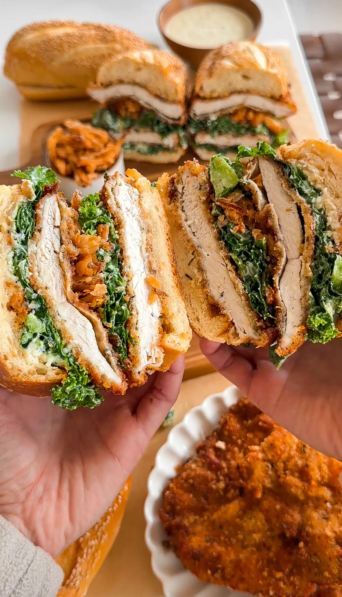
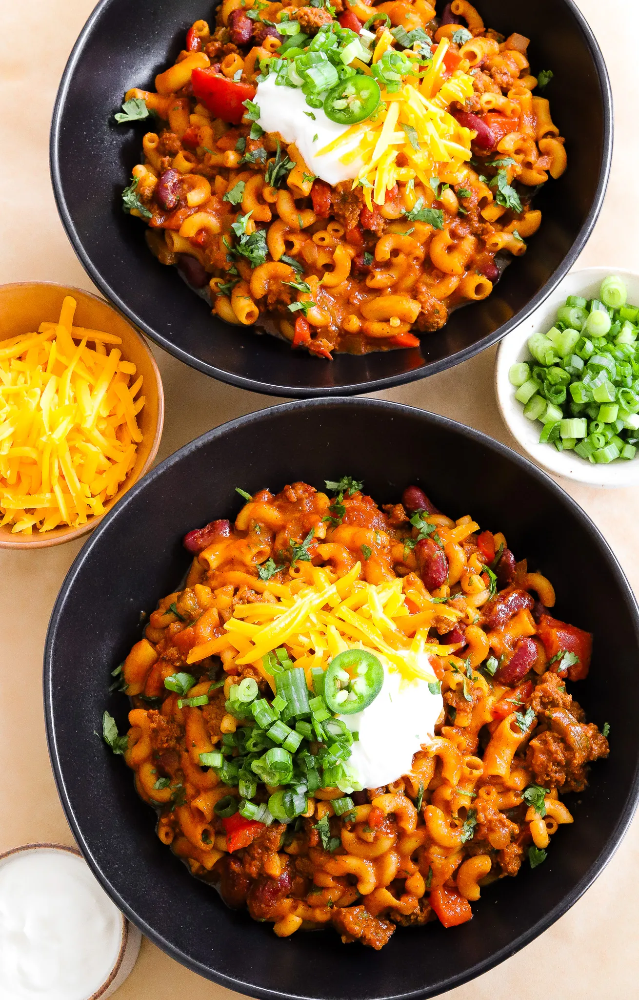

Gianna's Favorites Cookbook
Jump to Crispy Chicken Katsu Recipe
Jump to Chicken Cutlet Kale Caesar Sandwich Recipe
Jump to Chili Macaroni Recipe
Crispy Chicken Katsu
Prep Time: 20 mins
Cook Time: 10 mins
Total Time: 30 mins
Ingredients
- 1 pound boneless skinless chicken thighs (about 5 pieces)
WET BATTER
- 2 large eggs
- 1 tablespoon milk
- 1/4 teaspoon salt
- 1/4 teaspoon black pepper
- 1/4 teaspoon garlic powder
DRY COATING
- 1/2 cup all purpose flour
- 1/2 teaspoon salt
- 1/4 teaspoon black pepper
- 1/4 teaspoon garlic powder
DRY BREADING
- 2 cups Panko breadcrumbs
- 1/2 teaspoon salt
- 1/4 teaspoon black pepper
- 1/4 teaspoon garlic powder
OTHER
- vegetable oil for frying
Cooking Instructions
Step 1: Prepare The Chicken
- Pat the chicken thighs dry with a paper towel.
Step 2: Prepare The Spices and Batter
-
In one bowl, combine all purpose flour with salt, black pepper,
and garlic powder.
-
In another bowl, whisk together the eggs also with a splash of
milk, and some more salt, black pepper, and garlic powder.
-
In a third bowl, add the Panko breadcrumbs with salt,
black pepper, and garlic powder.
Step 3: Coating The Chicken
-
First, coat each chicken thigh in the seasoned flour, making
sure to shake off any excess.
-
Dip each floured chicken in the egg mixture and let any excess
drip off. To make this process a lot less messy, reserve one
hand for just the dry and the other hand just for the wet.
-
Dip the chicken in the breadcrumbs after the egg and press them
on tightly all around. Repeat with the rest.
-
Let the breaded chicken sit for 10 minutes and in the meantime,
start heating up the oil to fry.
Step 4: Frying The Chicken
-
Once the oil is hot enough (350°F), drop the chicken in, frying
in batches so they're not overcrowded. Once golden brown on one
side, flip over and repeat with the other side.
-
Take out and transfer to a wire rack once cooked through the
center. Chop and enjoy warm!
Chicken Cutlet Kale Caesar Sandwich

Prep Time: 15 minutes
Cook Time: 45 minutes
Total Time: 1 hour
Yields: 2 to 3
sandwiches
Ingredients
CRISPY ONIONS
- 1/2 large yellow onion, thinly sliced
- 1/2 cup buttermilk
- 1/3 cup all-purpose flour
- sprinkle of salt, to taste
- vegetable oil, for frying
CAESAR DRESSING
- 1 cup mayonnaise
- 1/4 cup buttermilk
- 1 tablespoon lemon juice
- 1/2 tablespoon Worcestershire sauce
- 2 teaspoons minced garlic
- 2 teaspoons yellow mustard
- 1 teaspoon anchovy paste
- 1 teaspoon dried parsley
- 1/2 teaspoon black pepper
- 1/2 cup parmesan, freshly grated
CHICKEN CUTLETS
- 4 to 6 thinly sliced chicken breast filets
- vegetable oil, for frying
FLOUR BATTER
- 1/2 cup all-purpose flour
- salt, to taste
- black pepper, to taste
WET BATTER
- 2 to 3 large eggs
- 1 teaspoon Italian seasoning
- 1 tablespoon grated parmesan
- 1/2 teaspoon salt
- 1/4 teaspoon black pepper
DRY BATTER
- 1/2 cup plain breadcrumbs
- 1/2 cup Panko breadcrumbs
- 1/4 cup grated parmesan
- 1/2 tablespoon Italian seasoning
- 1 teaspoon oregano
- 1 teaspoon dried parsley
- 1 teaspoon salt
- 1/2 teaspoon black pepper
SANDWICH ASSEMBLY
- fresh kale, chopped
- toasted and sliced sesame baguette or hoagie rolls
- pecorino romano, grated
Cooking Instructions
Step 1: Make the Crispy Onions
-
Soak the thinly sliced onions in buttermilk for
10-15 minutes.
-
Meanwhile, heat vegetable oil in a deep skillet or saucepan
over medium-high heat to about 350°F.
- In a bowl, mix the flour with a sprinkle of salt.
-
Drain the onion slices from the buttermilk, dredge them in the
flour mixture, and shake off any excess.
-
Fry the onions in batches in the hot oil until golden and
crispy, about 4-5 minutes per batch. Set aside on paper towels
to drain any excess oil.
Step 2: Prepare the Caesar Dressing
-
In a medium bowl, whisk together mayonnaise, buttermilk,
lemon juice, Worcestershire sauce, minced garlic, mustard,
anchovy paste, dried parsley, black pepper, and grated parmesan.
Once smooth, set aside.
Step 3: Bread and Fry the Chicken Cutlets
-
Prepare the chicken cutlets by pounding each piece to even
thickness if needed.
-
Set up the dredging station. For the Flour Batter: Place
all-purpose flour with salt and black pepper in a shallow bowl.
For the Wet Batter: In another bowl, beat the egg with
Italian seasoning, parmesan, salt, and black pepper.
For the Dry Batter: In a third bowl, mix plain
breadcrumbs, Panko breadcrumbs, grated parmesan, Italian
seasoning, oregano, dried parsley, salt, and black pepper.
-
Dredge each chicken cutlet in the flour, shaking off
any excess.
-
Dip the floured cutlet into the wet batter, allowing any excess
to drip off.
-
Finally, coat the cutlet in the dry batter mixture, pressing
to adhere.
-
Heat oil in a skillet over medium heat, then fry each breaded
chicken cutlet until golden and fully cooked, about 3-4 minutes
per side. Set aside on a wire rack or paper towel-lined plate.
Step 4: Assemble the Sandwich
-
In a large bowl, toss the chopped kale with a few spoonfuls of
Caesar dressing until evenly coated.
-
Add extra caesar dressing on both sides of the toasted bread
and then place a fried chicken cutlet on the bottom half of
each sandwich roll or slice of bread.
-
Top the bottom side with the dressed kale, crispy onions, and
lots of pecorino romano.
-
Add the top bun with the cutlet and press lightly. Cut the
sandwich in half to enjoy your kale Caesar chicken cutlet
sandwich!
Chili Macaroni

Prep Time: 15 minutes
Cook Time: 30 minutes
Total Time: 45
minutes
Yields: 6 to 7
Ingredients
- 1 tablespoon olive oil
- 1 whole red bell pepper, diced
- 1 jalapeño, deseeded and diced
- 1/2 yellow onion, diced
- 1 1/2 tablespoon garlic, minced
- 1 pound 90/10 ground beef
- 2 1/2 tablespoons chili powder
- 2 teaspoons smoked paprika
- 2 teaspoons cumin
- 2 teaspoons coriander
- 1 1/2 teaspoon oregano
- 1 teaspoon salt, more or less to taste
- 1/2 teaspoon black pepper
- 1/2 teaspoon onion powder
- pinch of cayenne powder, to taste
- 3 cups beef broth, more as needed
- 2 tablespoons light brown sugar
- 15-ounce can fire-roasted diced tomatoes
- 15-ounce can tomato sauce
- 1/2 tablespoon Worcestershire sauce
- 15-ounce can kidney beans, rinsed and drained
- 12 ounces elbow pasta
- 1 to 2 tablespoons cilantro, finely chopped
- 1/2 cup cheddar cheese, shredded
- sour cream, optional topping
- chopped green onions, optional topping
Cooking Instructions
Step 1: Heat The Olive Oil
- In a large pot, heat some olive oil over medium heat.
Step 2: Sauté Vegetables
-
Add diced red bell pepper, deseeded and diced jalapeño, and
diced yellow onion. Sauté until softened.
Step 3: Add Garlic
-
Stir in minced garlic and cook for another minute until
fragrant.
Step 4: Brown the Beef
-
Add lean ground beef to the pot. Break it apart and cook until
browned and no longer pink.
Step 5: Mix in Spices
-
Add chili powder, smoked paprika, cumin, coriander, oregano,
salt (adjust to taste), black pepper, onion powder, and a pinch
of cayenne powder to taste. Stir and cook for 1 minute to bloom
the spices.
Step 6: Add Liquids
-
Pour in beef broth, then add light brown sugar, a can of
fire-roasted diced tomatoes, a can of tomato sauce, and
Worcestershire sauce. Bring to a simmer.
-
Incorporate Beans and Pasta: Stir in rinsed and drained kidney
beans and uncooked elbow pasta.
Step 7: Cook Pasta
-
Cover the pot and let it cook, stirring occasionally, until the
pasta is tender and has absorbed most of the liquid.
Step 8: Add Finishing Touches
-
Once the pasta is cooked, stir in finely chopped cilantro and
shredded cheddar cheese until melted.
Serve:
-
Top it off with a dollop of sour cream, green onions, and a bit
more cheddar cheese. Serve immediately and enjoy your delicious
chili mac!